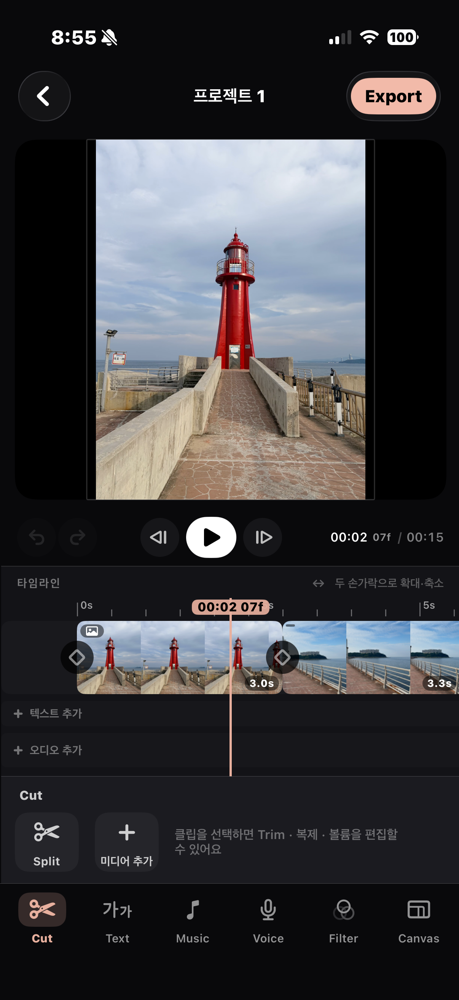
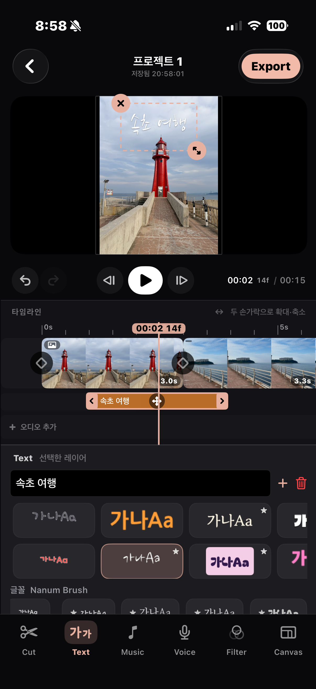
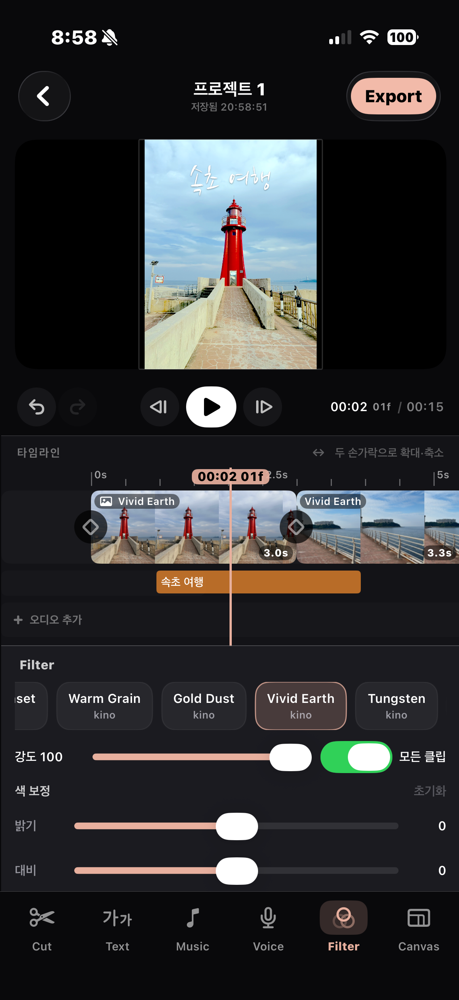
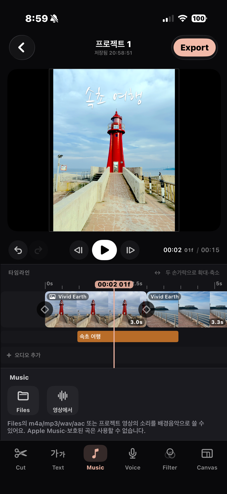
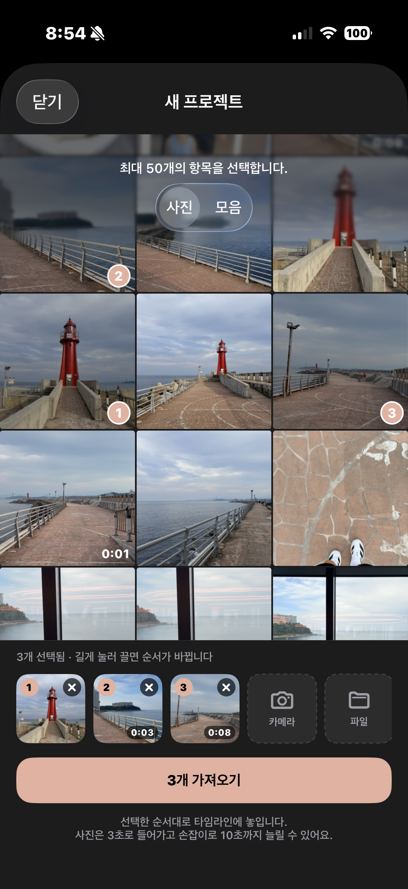

Little moments.
Lasting memories.
Trips, family, and the beauty of an ordinary day.
Pick your photos and videos. Make a few simple edits.
Tell your story with MellowCut.
A video editor for iPhone

Six tools. Just what you need.
Shape your movie, one simple step at a time.
Trim to the moments that matter and join your clips.
Tell your story with fonts and text styles.
Add audio files or sound from your videos.
Record your voice while watching your movie.
Set the mood with filters and color adjustments.
Choose the aspect ratio that fits your story.
Make every scene your own.

A few words. A whole memory.
From a trip title to a little everyday note, place your words right where you want them.

The colors you remember.
Adjust filter intensity, brightness, and contrast to bring out the feeling of each scene.

Memories have a soundtrack.
Import an audio file or extract sound from a video to set the mood.
Pick. Edit.
Then export.
- Choose photos and videos
Clips follow your selection order. Rearrange them before importing. - Make it yours
Trim your clips and add text, music, voice, and filters. - Save your movie
Choose a canvas ratio, then use Export to save your finished movie.
Some features and additional editing options require MellowCut Pro.

Need a little help?
Find editing tips and answers to common questions.